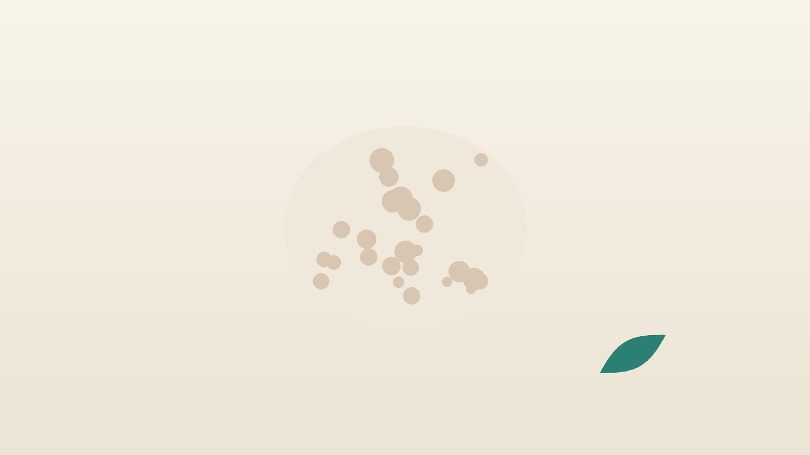

건강 칼럼 · 인천 골다공증 한의원
뼈가 약해졌다는 이야기를 들었다면, 골다공증과 한방 관리

나의 뼈, 이런 상황인가요?
- 폐경이 된 지 몇 년 지났거나 50세가 넘었다
- 젊었을 때보다 키가 눈에 띄게 줄었다
- 등이 굽어 간다는 말을 들었다
- 살짝 넘어졌는데 손목이나 갈비뼈가 부러진 적이 있다
- 스테로이드를 석 달 넘게 먹은 적이 있다
- 부모님 중 고관절 골절을 겪은 분이 있다
이 체크리스트는 진단 도구가 아니라 상담이 필요한지 가늠해 보는 참고용입니다.
T점수는 어떻게 읽나요?
골밀도 검사는 보통 허리뼈와 엉덩이뼈를 저선량 엑스선(DXA)으로 찍어, 젊은 성인의 평균 뼈 밀도와 비교한 값인 T점수로 결과를 알려 줍니다. 세계보건기구(WHO) 기준에 따라 T점수가 -1 이상이면 정상, -1과 -2.5 사이는 골감소증, -2.5 이하이면 골다공증입니다. 이미 가벼운 충격으로 척추나 고관절이 부러졌다면 수치와 관계없이 골다공증으로 치료하기도 합니다.
뼈는 평생 헌 뼈를 녹이고 새 뼈를 만드는 일을 반복하는데, 폐경 뒤 여성호르몬이 줄면 녹는 속도가 빨라져 뼈 손실이 커집니다. 대한골대사학회 진료지침은 골절 위험이 높은 분께 비스포스포네이트, 데노수맙 같은 약물 치료를 권하고, 칼슘과 비타민D, 운동, 낙상 예방을 기본으로 함께 관리하도록 안내합니다.
척추 압박골절이나 응급 진료가 의심되는 신호
- 물건을 들거나 기침을 한 뒤 등이나 허리가 갑자기 심하게 아프다
- 누웠다 일어나거나 돌아누울 때 등 한가운데가 찌르듯 아프다
- 몇 달 사이 키가 3cm 넘게 줄거나 등이 빠르게 굽었다
- 넘어진 뒤 엉덩이나 사타구니가 아파 서거나 걷지 못한다
- 허리 통증과 함께 다리 힘이 빠지거나 대소변 조절이 어렵다
척추 압박골절은 큰 사고 없이도 생기며, 단순 허리 근육통으로 여겨 넘기는 경우가 많습니다. 이런 신호가 있으면 정형외과에서 영상 검사를 먼저 받으세요. 처방받은 골다공증 약은 통증이 없다고 임의로 줄이거나 끊지 마세요. 약을 쉬는 시기는 담당 의사가 골밀도와 골절 위험을 보고 정합니다.
한의학은 골다공증을 어떻게 보나요?
『황제내경』 소문 선명오기편은 '신은 뼈를 주관한다(腎主骨)'고 하여, 뼈의 건강을 몸의 근본 정기를 간직한 신(腎)과 연결했습니다. 같은 책 위론(痿論)은 신에 열이 생기면 '뼈가 마르고 골수가 줄어 골위(骨痿)가 된다'고 하였는데, 허리와 등이 힘을 잃고 뼈가 약해지는 모습이 골다공증과 닮았습니다.
한의학에서는 나이 들며 신의 정기가 줄고, 음식을 기운으로 바꾸는 비(脾)가 약해 뼈와 근육을 채울 재료가 부족해지면 뼈가 성글어진다고 보았습니다. 다만 한약으로 골밀도 수치를 올린다고 말할 수는 없으며, 한방 관리는 약물 치료를 받는 동안 허리 통증과 피로, 근력 저하를 덜고 넘어지지 않는 몸을 만드는 데 목적을 둡니다.
나는 어떤 유형일까?
1. 신양허(腎陽虛) 차고 시린 유형
- 이런 분에게 많아요
- 추위를 많이 타는 고령의 분
- 나타나는 모습
- 허리와 무릎이 시리고 힘이 없다
- 함께 오는 몸의 신호
- 손발 냉감, 밤 소변, 아침 묽은 변
- 진찰에서 보이는 모습
- 혀 빛이 옅고 물기가 많으며 맥이 깊게 가라앉아 느림
- 치료 방향
- 신의 양기를 데우고 뼈를 돕는 방향 (우귀환 계열)
- 오늘부터 해 볼 것
- 허리를 따뜻하게 감싸고 찬 바닥에 오래 앉지 마세요.
2. 간신음허(肝腎陰虛) 마르고 화끈한 유형
- 이런 분에게 많아요
- 폐경 뒤 열감이 남은 마른 여성
- 나타나는 모습
- 허리가 시큰하고 오후에 얼굴이 달아오른다
- 함께 오는 몸의 신호
- 입 마름, 식은땀, 잠이 얕음
- 진찰에서 보이는 모습
- 혀가 붉고 이끼가 얇으며 맥이 가늘면서 빠르게 뜀
- 치료 방향
- 진액과 정을 채우는 방향 (좌귀환·육미지황환 계열)
- 오늘부터 해 볼 것
- 단백질 반찬과 두부, 멸치를 끼니마다 곁들이세요.
3. 비위허약(脾胃虛弱) 먹는 힘이 약한 유형
- 이런 분에게 많아요
- 입맛이 없고 체중이 줄어든 분
- 나타나는 모습
- 조금만 걸어도 지치고 근육이 빠진다
- 함께 오는 몸의 신호
- 식후 더부룩함, 묽은 변, 얼굴빛이 누런 편
- 진찰에서 보이는 모습
- 혀가 담백하고 잇자국이 있으며 맥이 약함
- 치료 방향
- 비위를 북돋아 먹은 것이 몸이 되게 하는 방향 (보중익기탕 계열)
- 오늘부터 해 볼 것
- 하루 세 끼를 거르지 말고 조금씩 자주 드세요.
4. 기체혈어(氣滯血瘀) 골절 뒤 통증이 남은 유형
- 이런 분에게 많아요
- 압박골절 뒤 등 통증이 이어지는 분
- 나타나는 모습
- 등이나 허리 한 곳이 찌르듯 아프고 밤에 더하다
- 함께 오는 몸의 신호
- 돌아눕기 힘듦, 변비
- 진찰에서 보이는 모습
- 혀가 어둡고 반점이 있음
- 치료 방향
- 막힌 혈을 풀어 통증을 덜고 회복을 돕는 방향 (신통축어탕 계열)
- 오늘부터 해 볼 것
- 통증이 허락하는 만큼 짧게 자주 걸으세요.
한의원에서는 어떻게 진찰하나요?
- 검사와 약 확인: 골밀도 결과지, 척추 영상, 복용 중이거나 주사로 맞는 골다공증 약과 투여 날짜를 확인합니다.
- 골절 위험: 과거 골절, 키 변화, 스테로이드 복용, 흡연·음주, 가족력을 여쭙니다.
- 낙상 위험: 걸음걸이, 한 발 서기, 의자에서 일어나기로 근력과 균형을 살핍니다.
- 설진·맥진: 신과 비의 허약, 막힌 혈의 비중을 판단합니다.
침·약침·한약 치료는 어떻게 하나요?
1. 침 치료
- 신수(腎俞): 허리에서 둘째 허리뼈 아래, 척추 양옆으로 손가락 두 개 너비. 신의 기운을 돕는 자리입니다.
- 대저(大杼): 목을 숙였을 때 튀어나오는 뼈 바로 아래 등뼈 양옆. 예부터 뼈의 기운이 모이는 곳이라 했습니다.
- 현종(懸鍾): 바깥 복사뼈 꼭대기에서 위로 손가락 네 개 너비, 종아리뼈 앞쪽. 골수를 돕는 혈로 씁니다.
- 족삼리(足三里): 무릎 아래 바깥쪽 정강이뼈 옆, 무릎 오목한 곳에서 네 손가락 아래. 비위와 다리 힘을 돕습니다.
골절이 의심되는 부위에는 시술하지 않으며, 얕고 부드러운 자극으로 통증과 근육 긴장을 덜어 냅니다.
2. 약침·온열 요법과 수기 치료
허리와 등 주변 근육의 긴장에 약침을 시행하고, 시리고 찬 분은 온열 요법을 함께 시행합니다. 추나 요법도 시행하지만, 골다공증이 있는 분께 척추를 강하게 비틀거나 누르는 수기 치료는 압박골절을 일으킬 수 있어 피하고, 필요하면 진찰 후 아주 부드러운 방법만 상담합니다.
3. 한약
유형별 탕약으로 허리 통증, 피로, 입맛과 근력을 살핍니다. 한약은 골다공증 약을 대신하지 않습니다. 비스포스포네이트는 아침 공복에 물 한 컵과 먹고 30분 이상 눕지 않은 채 기다려야 하므로, 탕약은 식사 뒤로 시간을 나눠 드시도록 안내합니다. 칼슘·비타민D 보충제까지 포함해 드시는 약을 알려 주시면 확인해 처방합니다.
원장님이 네이버 블로그에 진료 이야기와 건강 정보를 꾸준히 올리고 있습니다. 더 많은 이야기는 블로그에서 확인해 보세요.
블로그 보기관리는 어떤 순서로 진행되나요?
- 골밀도 확인 골밀도 검사와 필요한 피 검사로 상태를 확인하고 약물 치료 여부를 정합니다.
- 첫 한방 진료 유형과 통증, 낙상 위험을 정리합니다.
- 4~8주 주 1~2회 침 치료와 탕약, 근력·균형 운동으로 통증과 기력을 관리합니다.
- 1~2년 단위 골밀도 재검 결과를 함께 보며 운동과 생활 관리를 이어 갑니다.
골밀도 변화는 몇 달이 아니라 1~2년 단위로 확인하므로, 통증과 근력, 낙상 여부를 중간 지표로 함께 봅니다.
뼈를 지키는 생활 관리
- 칼슘: 우유·요구르트, 두부, 멸치, 푸른 잎채소로 하루 800~1,000mg 정도를 음식 위주로 채우고, 보충제는 의사와 양을 맞춥니다.
- 비타민D: 낮 시간 햇볕을 15~20분 쬐고, 혈중 농도가 낮다면 보충제를 처방받으세요.
- 근력·균형 운동: 걷기, 계단 오르기, 한 발 서기처럼 체중이 실리는 운동을 꾸준히 합니다. 허리를 깊게 숙이거나 비트는 동작은 피하세요.
- 낙상 예방: 욕실에 미끄럼 방지 매트와 손잡이를 두고, 밤에는 화장실 가는 길에 작은 등을 켜 두세요.
- 술·담배·카페인: 흡연과 과음은 뼈 손실을 빠르게 하니 끊거나 줄이고, 커피는 하루 두 잔 이내로 합니다.
다른 진료가 함께 필요한 경우
- 골다공증 약의 시작, 휴약, 변경은 내분비내과나 정형외과에서 정합니다.
- 골다공증 주사나 약을 쓰는 중 발치나 임플란트가 필요하면 치과에 꼭 알리세요.
- 어지럼이나 시력 저하로 자주 넘어진다면 원인 진료를 받으세요.
- 젊은 나이에 골다공증이 나왔다면 갑상선, 부갑상선 등 원인 검사가 필요합니다.
자주 묻는 질문 Q&A
- Q1. 골다공증 약을 오래 먹어도 괜찮나요?
- 약을 쉬는 시기는 담당 의사가 정합니다. 임의로 끊지 마세요.
- Q2. 한약으로 골밀도를 올릴 수 있나요?
- 그렇게 말할 근거는 부족합니다. 한방은 통증과 기력, 근력 관리를 돕습니다.
- Q3. 골다공증이 있으면 추나 치료를 받으면 안 되나요?
- 강하게 비틀거나 누르는 방법은 피합니다. 진찰 후 부드러운 방법만 상담합니다.
- Q4. 허리가 갑자기 아픈데 근육통인가요?
- 가벼운 충격 뒤 갑자기 아프면 압박골절일 수 있어 영상 검사가 먼저입니다.
- Q5. 칼슘 보충제를 많이 먹으면 좋나요?
- 음식 위주로 채우고, 보충제는 필요한 만큼만 드세요.
- Q6. 골감소증도 치료가 필요한가요?
- 골절 위험에 따라 다르며, 생활 관리는 지금부터 시작하는 것이 좋습니다.
- Q7. 치료는 얼마나 받아야 하나요?
- 보통 4~8주 동안 통증과 기력 변화를 보며 정합니다.
- Q8. 집에서 해 볼 수 있는 지압이 있나요?
- 무릎 아래 족삼리를 엄지로 부드럽게 눌러 보세요. 등과 허리는 세게 누르지 마세요.
문원열 대표원장한의사 · 365스마일한의원
인천 서구 가정동 한자리에서 10년 넘게 진료하며, 환자 한 분 한 분의 아픔을 깊이 들여다보고 근본적인 원인을 찾는 진료를 지향합니다.
원장 소개 보기 →진료 안내
- 진료시간
- 평일 09:00~20:00 (점심시간 13:00~14:00)
토·일·공휴일 09:00~15:00 - 주소
- 인천광역시 서구 가경주로 46, 2층 (가정동)
인천2호선 가정중앙시장역 인근
영상으로 길 안내 보기 → - 주차
- 한의원 건물 바로 앞 1층 도원주차장
- 예약
- 네이버 예약 바로가기 또는 전화 예약
진료시간은 사정에 따라 바뀔 수 있으니 방문 전 전화로 확인해 주세요.
참고 자료
- World Health Organization. Assessment of fracture risk and its application to screening for postmenopausal osteoporosis. WHO Technical Report Series 843, 1994
- 대한골대사학회. 골다공증 진료지침
- 『황제내경 소문(素問)』 선명오기편(宣明五氣篇)·위론(痿論)
- 질병관리청 국가건강정보포털 — 원문
※ 이 글은 일반적인 건강 정보이며, 개인의 상태에 따라 치료 방법과 결과는 다를 수 있습니다. 정확한 진단과 치료는 진료를 통해 결정됩니다. 침·약침 시술 후 드물게 멍, 통증 등이 생길 수 있습니다.